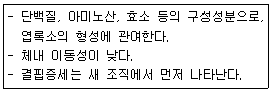
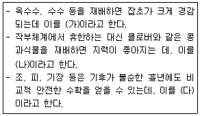
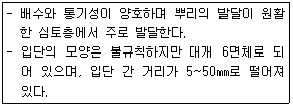

유기농업기능사 (2016-04-02 기출문제)
1과목: 작물재배
1. 다음에서 설명한 것은?

- Fe
- Mg
- Mn
- S
(정답률: 61%)

2. 다음 중 카드뮴 중금속에 내성이 가장 작은 것은?
- 콩
- 밭벼
- 옥수수
- 밀
(정답률: 64%)
3. 다음 중 유료작물이면서 섬유작물인 것은?
- 아마
- 감자
- 호프
- 녹두
(정답률: 82%)
4. 산성토양에 가장 약한 작물은?
- 땅콩
- 알파파
- 봄무
- 수박
(정답률: 65%)
5. 다음 중 (가), (나), (다)에 알맞은 내용은?

- (가) 중경작물, (나) 휴한작물, (다) 구황작물
- (가) 대파작물, (나) 중경작물, (다) 휴한작물
- (가) 휴한작물, (나) 대파작물, (다) 중경작물
- (가) 중경작물, (나) 구황작물, (다) 휴한작물
(정답률: 85%)
6. 냉해에 대한 설명으로 틀린 것은?
- 물질의 동화와 전류가 저해된다.
- 암모니아의 축적이 적어진다.
- 질소, 인산, 칼리, 규산, 마그네슘 등의 양분흡수가 저해된다.
- 원형질유동이 감퇴ㆍ정지하여 모든 대사기능이 저해된다.
(정답률: 76%)
7. 다음 중 인과류인 것은?
- 자두
- 양앵두
- 무화과
- 비파
(정답률: 77%)
8. 다음 중 하고현상의 대책으로 틀린 것은?
- 관개
- 혼파
- 약한 정도의 방목
- 북방형 목초의 봄철 생산량 증대
(정답률: 67%)
9. 다음 중 최저온도가 1~2℃인 작물은?
- 벼
- 완두
- 담배
- 오이
(정답률: 66%)
10. 다음 중 토성을 구분하는 기준은?
- 모래와 물의 함량비율
- 부식의 함량비율
- 모래, 부식, 점토, 석회의 함량비율
- 모래, 미사, 점토의 함량비율
(정답률: 85%)
11. 다음 비료 중 화학적ㆍ생리적 반응이 모두 염기성인 것은?
- 유안
- 황산가리
- 과인산석회
- 용성인비
(정답률: 69%)
12. 다음 중 요수량이 가장 작은 것은?
- 호박
- 완두
- 클로버
- 수수
(정답률: 67%)
13. 광합성의 반응식으로 옳은 것은?
- 3CO2＋12H2O → C6H12O6＋6H2O＋6CO2
- 6CO2＋12H2O → C6H12O6＋6H2O＋6H2S
- 6CO2＋12H2O → C6H12O6＋6H2O＋6O2
- 3CO2＋12H2O → C6H12O6＋6H2O＋6H2S
(정답률: 72%)
14. 내건성에 강한 작물에 대한 특성으로 틀린 것은?
- 왜소하고 잎이 작다.
- 다육화의 경향이 있다.
- 원형질막의 글리세린 투과성이 작다.
- 탈수될 때 원형질의 응집이 덜하다.
(정답률: 61%)
15. 다음 중 점토광물에 결합되어 있어 분리시킬 수 없는 수분은?
- 중력수
- 모관수
- 흡습수
- 결합수
(정답률: 84%)
16. 다음 중 파종된 종자의 약 40%가 발아한 날을 무엇이라 하는가?
- 발아기
- 발아시
- 발아전
- 발아세
(정답률: 70%)
17. 다음 중 이산화탄소의 일반적인 대기 조성의 함량은?
- 약 3.5ppm
- 약 35ppm
- 약 350ppm
- 약 3500ppm
(정답률: 70%)
18. 다음 중 여름에 온도가 높아져 논토양에 산소가 부족하여 SO4-가 황화수소로 환원되어 무기양분의 흡수장애가 일어나는데, 가장 크게 억제되는 순서부터 옳게 나열한 것은?
- 인＞규소＞망간＞마그네슘
- 인＞망간＞규소＞마그네슘
- 마그네슘＞망간＞규소＞인
- 마그네슘＞규소＞망간＞인
(정답률: 61%)
19. 다음 중 작물의 기원지가 중국에 해당하는 것은?
- 수박
- 호박
- 가지
- 미나리
(정답률: 70%)
20. C3식물과 C4식물의 차이에 대한 설명으로 틀린 것은?
- CO2 보상점은 C3식물이 더 높다.
- 광합성산물 전류속도는 C4식물이 더 높다.
- C3식물은 엽육세포가 발달되어 있다.
- C3식물의 내건성이 상대적으로 더 높다.
(정답률: 55%)
2과목: 토양관리
21. 논토양이 환원상태로 되는 이유로 거리가 먼 것은?
- 물에 잠겨 있어 산소의 공급이 원활하지 않기 때문이다.
- 철·망간 등의 양분이 용탈되기 때문이다.
- 미생물의 호흡 등으로 산소가 소모되고 산소공급이 잘 이루어지지 않기 때문이다.
- 유기물의 분해과정에서 산소 소모가 많기 때문이다.
(정답률: 57%)
22. 다음 중 토양에 서식하며 토양으로부터 양분과 에너지원을 얻으며 특히 배설물이 토양입단 증가에 영향을 주는 것은?
- 사상균
- 지렁이
- 박테리아
- 방사상균
(정답률: 86%)
23. 치환성염기(교환성 염기)로 볼 수 없는 것은?
- K+
- Ca++
- Mg++
- H+
(정답률: 71%)
24. 산성토양을 개량하기 위한 물질과 가장 거리가 먼 것은?
- H2CO3
- MgCO3
- CaO
- MgO
(정답률: 63%)
25. 지렁이에 대한 설명으로 옳은 것은?
- spodosol토양에 개체수가 많다.
- 상대적으로 여름에 활동이 왕성하다.
- 과습한 지역은 지렁이 개체수를 증가시킨다.
- 거의 분해되지 않은 유기물의 시용은 개체수를 증가시킨다.
(정답률: 59%)
26. 다음에서 설명하는 것은?

- 원주상 구조
- 판상 구조
- 각주상 구조
- 괴상구조
(정답률: 64%)
27. 암모니아산화균에 해당하는 것은?
- Nitrosomonas
- Micromonospora
- Nocardia
- Streptomyces
(정답률: 61%)
28. 토양이 알칼리성을 나타낼 때 용해도가 높아져 작물의 과잉 흡수를 나타낼 수 있는 성분은?
- Mo
- Cu
- Zn
- H
(정답률: 50%)
29. 토양의 산화환원 전위 값으로 알 수 있는 것은?
- 토양의 공기유통과 배수상태
- 토양산성 개량에 필요한 석회소요량
- 토양의 완충능
- 토양의 양이온 흡착력
(정답률: 45%)
30. 토양 생물에 대한 설명으로 틀린 것은?
- 사상균은 1ha 당 생물체량이 1000~15000㎏에 달한다.
- 원핵생물인 세균은 생명체로서 가장 원시적인 형태이다.
- 조류는 유기물의 분해자로서 가장 중요하다.
- 선충, 곰팡이 등이 있다.
(정답률: 61%)
31. 토양 미생물의 활동 조건에 대한 설명으로 틀린 것은?
- 방선균은 건조한 환경에서 포자를 만들어 잠복한다.
- 세균은 산성에 강하고, 곰팡이는 산성에서 약해진다.
- 미생물 활동에 알맞은 pH는 대체로 7부근이다.
- 대부분의 방선균은 호기성균이다.
(정답률: 63%)
32. 토양의 입경조성에 따른 토양의 분류를 뜻하는 것은?
- 토양의 화학성
- 토성
- 토양통
- 토양의 반응
(정답률: 78%)
33. 다음 중 흐르는 물에 의하여 이동되어 퇴적된 모재는?
- 잔적모재
- 붕적모재
- 풍적모재
- 충적모재
(정답률: 61%)
34. 토양 pH가 4~7일 때 가장 많은 인산 형태는?
- PO43-
- HPO42-
- H2PO4-
- H3PO4
(정답률: 55%)
35. 다음 중 점토에 대한 설명으로 틀린 것은?
- 점토는 2차 광물이다.
- 교질의 특성과 함께 표면전하를 가진다.
- 화학적 특성을 결정하는데 있어서 중요하다.
- 점토의 광물조성은 단순하다.
(정답률: 66%)
36. 토양수분 위조점에서 기압(bar)은 약 얼마인가?
- -5
- -15
- -31
- -35
(정답률: 68%)
37. 토양에 첨가한 유기물 성분 중에서 미생물에 의해 가장 느리게 분해되는 것은?
- 당류
- 단백질
- 헤미셀룰로스
- 리그닌
(정답률: 66%)
38. 토양의 기지 정도에 따라 연작의 해가 적은 작물은?
- 토란
- 참외
- 고구마
- 강낭콩
(정답률: 63%)
39. 토양의 입단화에 좋지 않은 영향을 미치는 것은?
- 유기물 시용
- 석회 시용
- 칠레초석 시용
- krillium 시용
(정답률: 72%)
40. 토양이 산성화될 때 발생되는 생물학적 영향으로 틀린 것은?
- 알루미늄 독성으로 인해 식물의 뿌리 신장을 저해한다.
- 철의 과잉흡수로 벼의 잎에 갈색의 반점이 생긴다.
- 망간독성으로 인해 식물 잎의 만곡현상을 야기한다.
- 칼륨의 과잉흡수로 인해 줄기가 연약해 진다.
(정답률: 55%)
3과목: 유기농업일반
41. 굴광현상에 가장 유효한 광은?
- 적색광
- 자외선
- 청색광
- 자색광
(정답률: 77%)
42. 월년생 작물로만 이루어진 것은?
- 호프, 벼
- 아스파라거스, 대두
- 가을밀, 가을보리
- 호프, 옥수수
(정답률: 77%)
43. 지하에 토관ㆍ목관ㆍ콘크리트관 등을 배치하여 통수하고, 간극으로부터 스며 오르게 하는 방법은?
- 개거법
- 암거법
- 압입법
- 살수관개법
(정답률: 71%)
44. 경사지에서 수식성 작물을 재배할 때 등고선으로 일정한 간격을 두고 적당한 폭의 목초대를 두어 토양침식을 크게 덜 수 있는 방법은?
- 조림재배
- 초생재배
- 단구식재배
- 대상재배
(정답률: 47%)
45. 한 종류의 작물이 생육하고 있는 이랑 사이나 포기 사이에 한정된 기간 동안 다른 작물을 파종하거나 심어서 재배하는 것은?
- 교호작
- 간작
- 난혼작
- 주위작
(정답률: 67%)
46. 식물체의 유체가 토양 속에 들어가면 미생물 분해가 일어나는데, 가장 먼저 일어나는 순서로 옳은 것은?
- 헤미셀룰로오스＞당류＞리그닌＞셀룰로오스
- 리그닌＞당류＞헤미셀룰로오스＞셀룰로오스
- 당류＞헤미셀룰로오스＞셀룰로오스＞리그닌
- 셀룰로오스＞당류＞헤미셀룰로오스＞리그닌
(정답률: 64%)
47. 광에너지를 효율적으로 이용할 수 있는 이상적인 옥수수 초형에 해당하지 않는 것은?
- 상위엽은 직립한다.
- 상위엽에서 밑으로 내려오면서 약간씩 경사를 더하여 하위엽에서 수평이 된다.
- 숫이삭이 작고 잎혀가 없다.
- 암이삭은 두 개인 것보다 한 개인 것이 밀식에 적응한다.
(정답률: 58%)
48. 연작장해에 대한 설명으로 틀린 것은?
- 특정 작물이 선호하는 양분의 수탈이 이루어진다.
- 작물의 생장이 지연된다.
- 수도작은 연작장해가 크게 일어난다.
- 수확량이 감소한다.
(정답률: 69%)
49. 과수의 내습성이 가장 큰 순서부터 옳게 나열된 것은?
- 감＞포도＞무화과＞올리브
- 포도＞무화과＞감＞올리브
- 올리브＞포도＞감＞무화과
- 무화과＞포도＞감＞올리브
(정답률: 58%)
50. 식물체의 조직 내에 결빙이 생기지 않는 범위의 저온에서 작물이 받게 되는 피해는?
- 동해
- 냉해
- 습해
- 수해
(정답률: 80%)
51. 1년생 또는 다년생의 목초를 인위적으로 재배하거나, 자연적으로 성장한 잡초를 그대로 이용하는 방법은?
- 청경법
- 멀칭법
- 초생법
- 절충법
(정답률: 76%)
52. 다음 중 광의 파장이 400nm인 광은?
- 적색광
- 청색광
- 자색광
- 근적외광
(정답률: 49%)
53. 작물이 생육하는데 알맞은 토양은?
- 질소, 인산 등 비료성분이 많은 염류집적토양
- 단립(單粒)구조가 많은 토양
- 수분을 많이 함유한 식토
- 유기물이 적당하고 작토층이 깊은 토양
(정답률: 77%)
54. 다음 중 요수량이 가장 큰 식물은?
- 기장
- 알팔파
- 보리
- 옥수수
(정답률: 70%)
55. 작물의 필수원소는 아니나 셀러리, 사탕무 등에 시용효과가 있는 것은?
- 나트륨
- 질소
- 황
- 구리
(정답률: 60%)
56. 다음 중 1년 휴작을 요하는 작물로만 이루어진 것은?
- 가지, 고추
- 완두, 토마토
- 수박, 사탕무
- 시금치, 생강
(정답률: 56%)
57. 연풍의 특성에 해당하지 않는 것은?
- 작물 주위의 습기를 배제하여 증산작용을 조장함으로써 양분흡수를 증대시킨다.
- 잎을 동요시켜 그늘진 잎의 일사를 조장함으로써 광합성을 증대시킨다.
- 건조할 때에는 건조상태를 억제한다.
- 잡초의 씨나 병균을 전파한다.
(정답률: 66%)
58. 다음 중 환경보전 및 지속가능한 생태농업을 추구하는 농업형태는?
- 관행농업
- 상업농업
- 전업농업
- 유기농업
(정답률: 84%)
59. 이랑을 세우고 이랑 위에 파종하는 방식은?
- 휴립휴파법
- 휴립구파법
- 평휴법
- 성휴법
(정답률: 68%)
60. 좁은 범위의 일장에서만 화성이 유도·촉진되며 2개의 한계일장이 있는 것은?
- 장일식물
- 단일식물
- 정일식물
- 중성식물
(정답률: 53%)